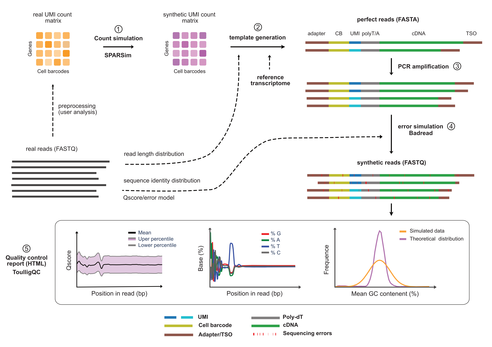

AsaruSim V1.0.1 documentation


AsaruSim derives from the Amazigh word Asaru (ⴰⵙⴰⵔⵓ ) which can mean "pipeline" or "channel".
AsaruSim is an automated Nextflow workflow designed for simulating 10x single-cell long read data from the count matrix level to the sequence level. It aimed at creating a gold standard dataset for the assessment and optimization of single-cell long-read methods.
Five major steps are implemented:
(1) - Simulation of a synthetic UMI count matrix.
(2) - Generation of perfect raw reads.
(3) - Amplification of the perfect reads.
(4) - Generation of realistic synthetic reads by adding errors to mimic real reads.
(5) - Production of a report with quality control values and plots calculated on the resulting synthetic reads.

Contributing
Contributions are more than welcome. See the git repository
License
AsaruSim is released under the GPL 3.0 license.
Citations
If you use AsaruSim in your research, please cite this manuscript:
Ali Hamraoui, Laurent Jourdren and Morgane Thomas-Chollier. AsaruSim: a single-cell and spatial RNA-Seq Nanopore long-reads simulation workflow. bioRxiv 2024.09.20.613625; doi: https://doi.org/10.1101/2024.09.20.613625
Acknowledgements
We would like to express our thanks to SLSim developers, which has been helpful to the AsaruSim workflow. Additionally, our thanks go to the teams behind Badread, SPARSim, and Trans-NanoSim whose tools are integral to the AsaruSim workflow.